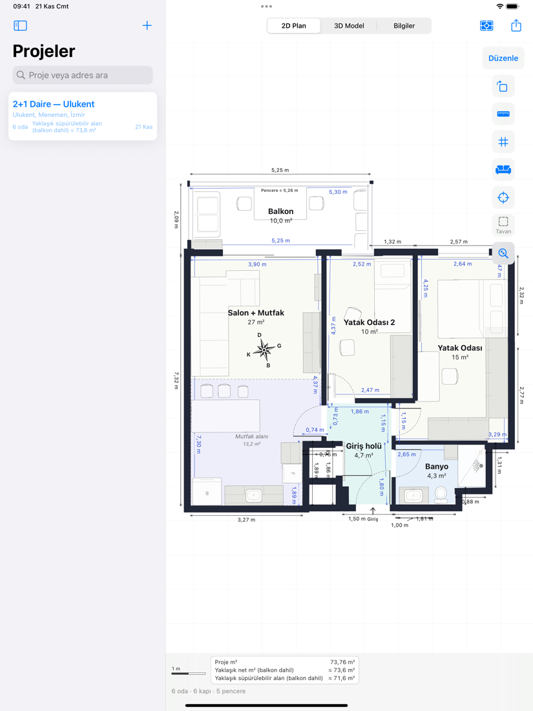
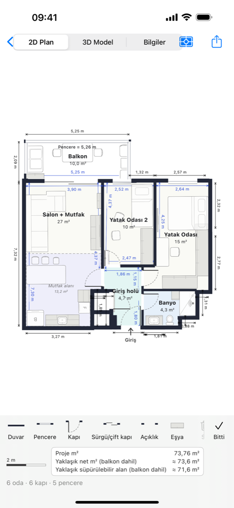
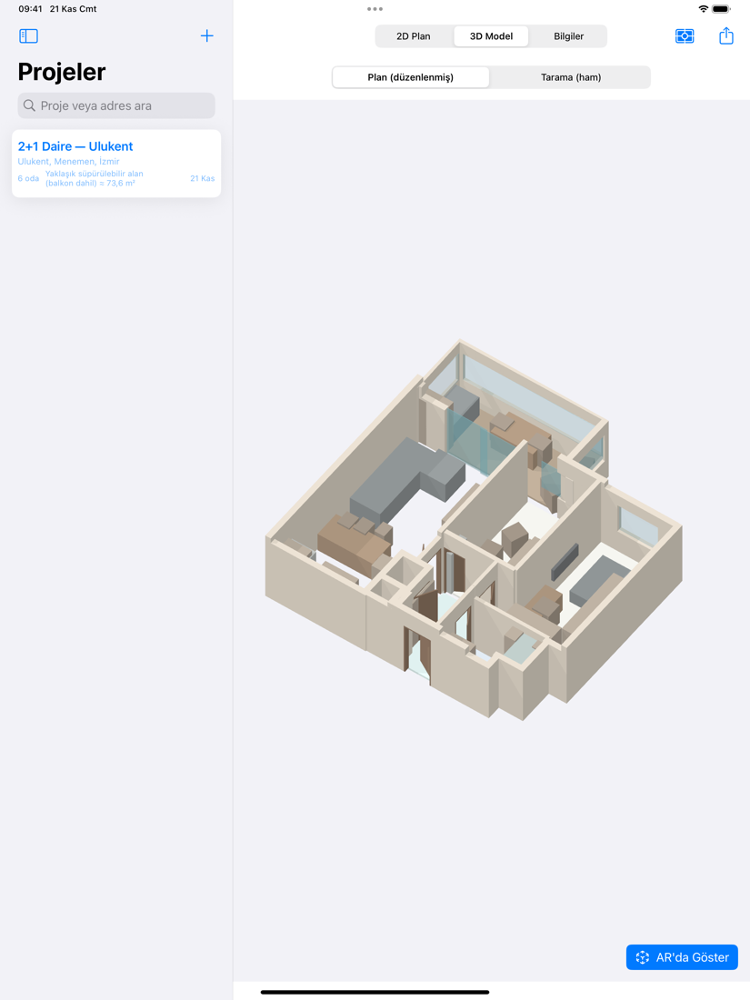
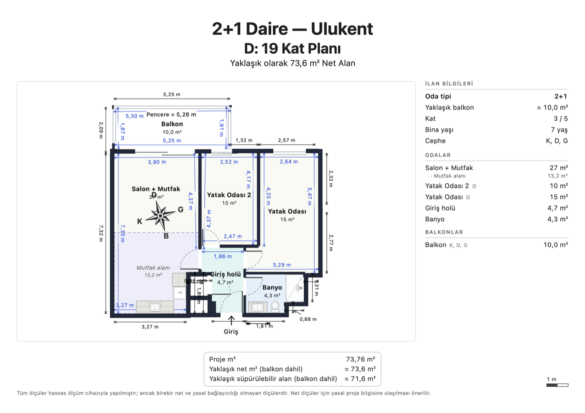
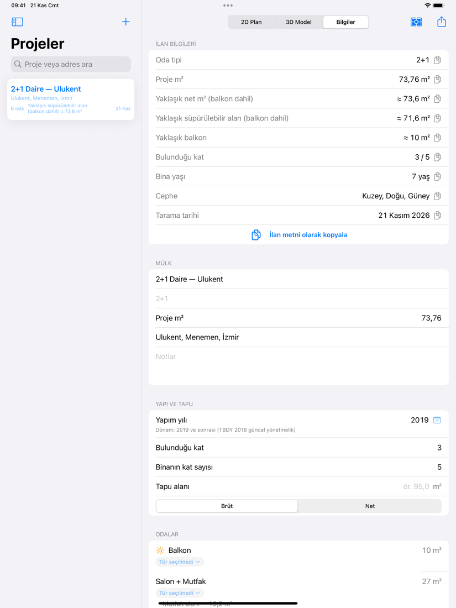

LiDAR ile Hızlı Tarama
Evi tek seferde ya da oda oda tarayın. Duvarlar, odalar, kapı ve pencereler otomatik hizalanıp 2D kat planına dönüşür.
FloorStamp; iPhone Pro ve iPad Pro'nun LiDAR tarayıcısıyla dakikalar içinde temiz 2D kat planı, 3D model ve ilana hazır A4 PDF çıktısı üretir. Hesap açma yok, buluta yükleme yok — tüm veriler cihazınızda kalır.

Özellikler
Gerçek daire taramalarıyla sahada test edildi; karmaşık CAD araçları olmadan profesyonel sonuç verir.
Evi tek seferde ya da oda oda tarayın. Duvarlar, odalar, kapı ve pencereler otomatik hizalanıp 2D kat planına dönüşür.
Her duvar bağımsızdır: komşu duvarları bozmadan uzatın, taşıyın, kalınlık verin; kapı, pencere ve eşyaları sürükleyip bırakın.
2D planda yaptığınız tüm düzeltmeler anında 3D modele yansır. Modeli döndürün, USDZ olarak paylaşın veya AR'da inceleyin.
Oda listesi, pusula yönü, cephe, kat bilgisi ve ofis logonuzla tek dokunuşta yatay A4 PDF ya da yüksek çözünürlüklü PNG üretin.
Net m² (balkon dahil), süpürülebilir alan ve elle girilen proje m² ayrı satırlarda, yaklaşık (≈) işareti ve yasal bilgilendirmeyle sunulur.
Üyelik, reklam ve izleme yoktur. Tarama sırasında görüntü kaydedilmez; projeleriniz yalnızca kendi cihazınızda saklanır.
Nasıl Çalışır
iPhone Pro veya iPad Pro ile odalarda gezinin; LiDAR duvarları, kapıları, pencereleri ve eşyaları anında ölçsün.
Oda adlarını seçin, balkon ekleyin, sürgü kapı veya eşya yerleştirin; pusula yönünü ve proje m² bilgisini ekleyin.
WhatsApp, Mail, AirDrop veya Dosyalar üzerinden ölçülü A4 kat planını, 3D modeli ya da ilan özet metnini paylaşın.
Ekran Görüntüleri
Aşağıdaki tüm plan, 3D model ve PDF çıktıları gerçek bir 2+1 dairenin LiDAR taramasından üretilmiştir.
Oda adları, duvar ölçüleri, pusula gülü, balkon ve alt alan kutusu otomatik yerleşir.

Duvar, pencere, kapı, sürgü kapı, açıklık ve eşyaları dokunup sürükleyerek düzenleyin.

Düzenlenmiş plandan anında üretilen 3D görünüm ve tek dokunuşla AR'da inceleme.

Oda listesi, cepheler, kat ve bina yaşı, alan kutusu, ofis logosu ve yasal uyarı tek sayfada.

Proje m², net m² ve süpürülebilir alan değerlerini tek dokunuşla ilan metni olarak kopyalayın.
Erken Erişim
FloorStamp şu anda Apple TestFlight üzerinden test aşamasındadır. Uygulamayı kendi iPhone veya iPad'inizde denemek ve geri bildirim paylaşmak için test daveti isteyebilirsiniz.